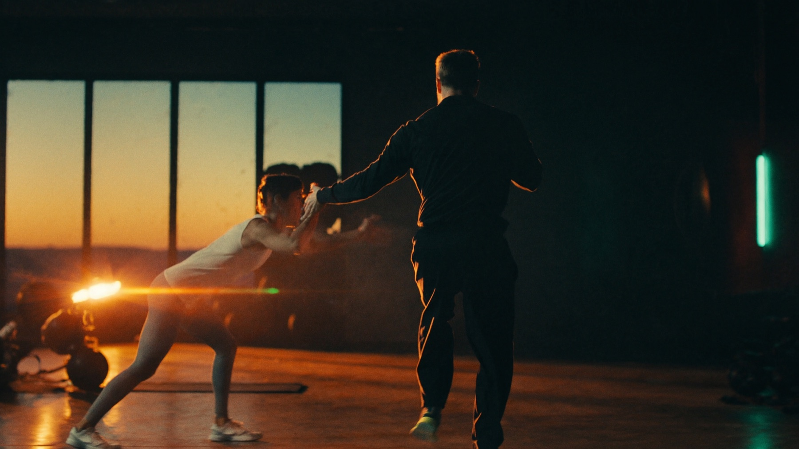
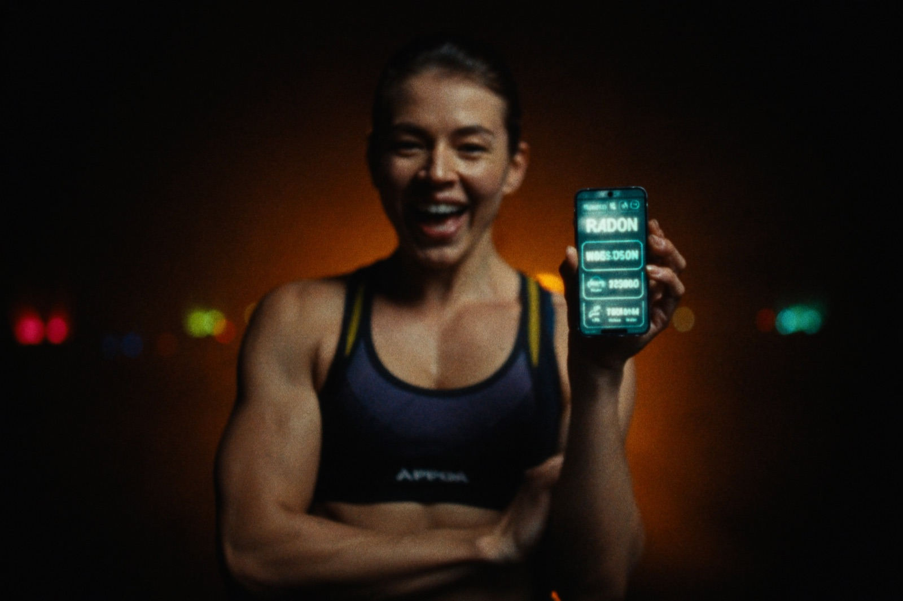
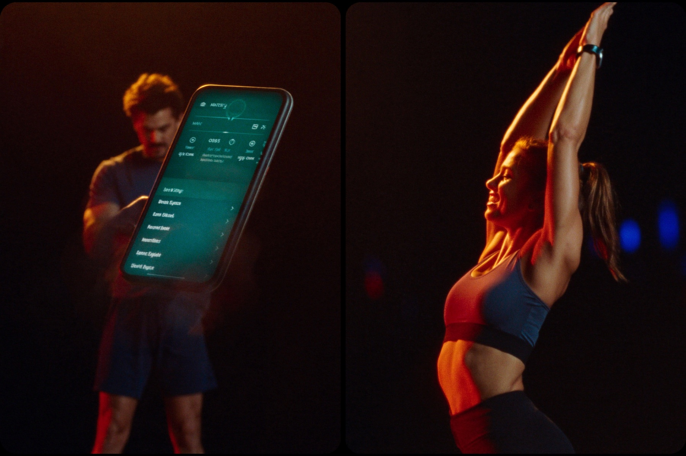
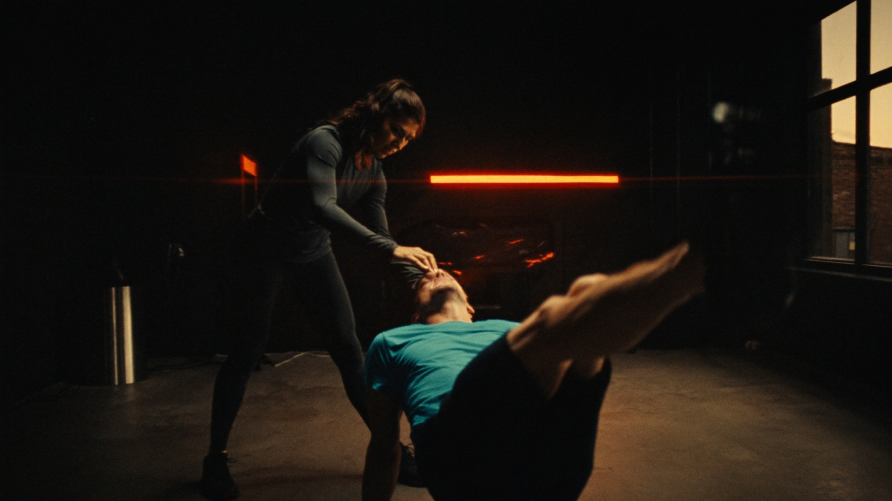

PT STÜDYOLARI İÇİN PREMIUM OPERASYON AKIŞI
Formera ile stüdyonuzun haftasını tek akıllı sahnede yönetin.
Formera; işletmeci, antrenör ve üyeyi aynı sistemde buluşturan AI destekli stüdyo yönetim platformudur. WhatsApp dağınıklığını azaltır, takipleri görünür kılar, haftalık kararları hızlandırır.
3 ayrı arayüz
30 gün pilot akış
AI hazır altyapı
PWA ana ekrana eklenir
Haftalık stüdyo kompozisyonu
Mikrofonla not alındı · AI taslak hazır
4 hareket · 38 dk · PT onayı bekliyor

SİNEMATİK STÜDYO HİSSİ
Butik salonun temposu, film karesi gibi okunur.
Formera ana sayfası artık markaya ait gerçek sahnelerle premium, sakin ve güven veren bir ilk izlenim kurar.

MOBİL ÖNCE
Üye, antrenör ve işletmeci aynı ritimde.
Dashboard’a geçmeden önce ziyaretçiye ürünün mobil/premium hissi gösterilir.
01Antrenörün üyeye ne verdiği görünür olur.
02Üye programı ve görevleri tek yerden takip eder.
03İşletmeci haftalık özeti beklemeden görür.
04Gelir, görev, ekip ve takip aynı hikâyeye bağlanır.

Üye deneyimiProgram, görev ve seans takibi tek mobil ritimde.

Antrenör akışıHer not, görev veya plan işletmecinin görüş alanına girer.
Formera, stüdyonun karmaşasını tek ışık altında toplar.
ÜÇ AYRI ROL, TEK OPERASYON DİLİ
Panel değil; stüdyo içindeki herkes için ayrı tasarlanmış bir deneyim.
İşletmeci
Üyeleri, antrenör görevlerini, gelir-gider metriklerini, haftalık özetleri ve pilot performansını tek merkezden izler.
Antrenör
Üyeye program, görev ve beslenme notu oluşturur; işletmeciden gelen görevleri takip eder; iş yükünü görünür kılar.
Üye
Kendi programını, görevlerini, seanslarını ve notlarını sade bir mobil arayüzden takip eder.
SESLİ AKIŞ + AI KATMANI
Yazmak yerine söyle. Formera notu göreve, görevi plana dönüştürür.
İlk sürümde mikrofonla yazıya döküm; AI paketlerinde haftalık öneriler, program taslakları ve sesli asistan deneyimi planlanır.
🎙️Görev başlığı ve açıklama dikte et
✦Haftalık operasyon önerisi al
◐Program ve beslenme notu taslağı üret
PAZARA ÇIKIŞ FUNNEL’I
İlk hedef: 4 kurucu stüdyo ile hızlı, ölçülebilir pilot.
Formera’yı önce canlı operasyon içinde doğruluyoruz. Her stüdyo için kurulum, ilk antrenör, ilk üyeler, ilk görevler ve haftalık sonuç raporu takip edilir.
- Tanıtım: Premium landing + kısa demo video / ekran akışı.
- Lead: Kurucu pilot başvurusu veya WhatsApp görüşmesi.
- Aktivasyon: 24 saatte 1 antrenör, 3 üye, 1 program, 1 görev.
- Dönüşüm: 30. gün sonunda zaman kazancı ve ekip görünürlüğü raporu.